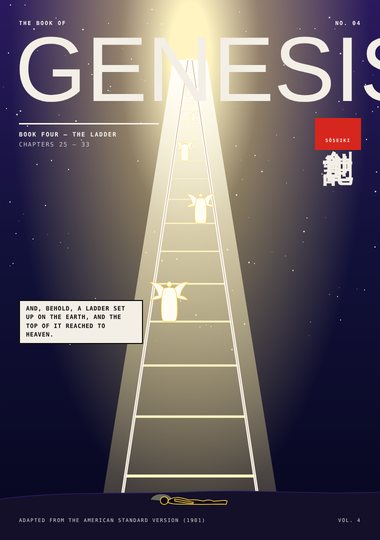
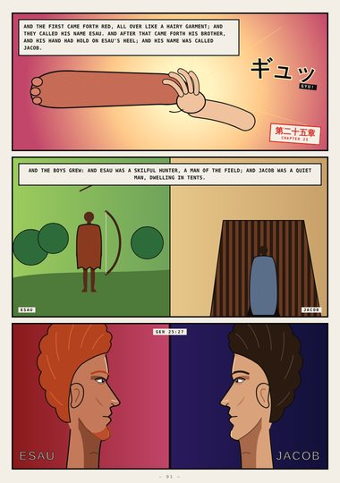
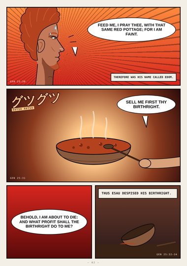
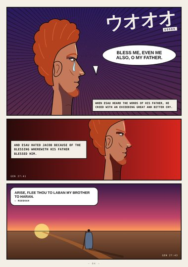
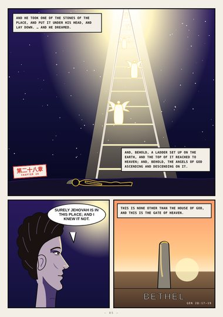
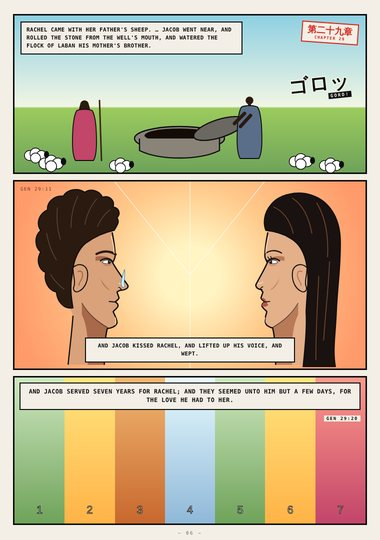
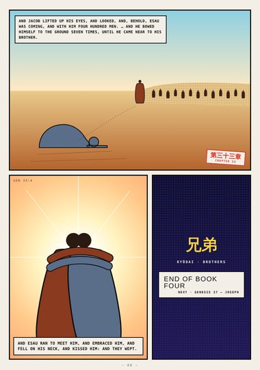

Genesis · Book Four · Genesis 25–33
The Ladder
Jacob and Esau, the stolen blessing, the ladder at Bethel, and the night of wrestling at Peniel.
Start reading ›Pages

CoverCoverGenesis 25–33
Page 1The TwinsGenesis 25:24–27
Page 2The Red PottageGenesis 25:29–34- Page 3The Stolen BlessingGenesis 27:1–29

Page 4A Bitter CryGenesis 27:34–43
Page 5The Ladder at BethelGenesis 28:10–19
Page 6RachelGenesis 29:9–20- Page 7Wrestling at PenielGenesis 32:24–31

Page 8The Brothers MeetGenesis 33:1–4